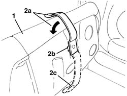
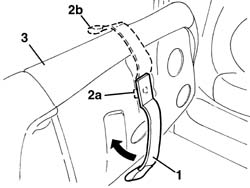

7050A24 Rear seat BACKREST COVER - R.R. with backrest removed
- Path
- Procedures > 70 FITTINGS > 7050 REAR SEATS > 7050A rear seat assembly > 7050A24 Rear seat BACKREST COVER - R.R. with backrest removed
- Kind
- repair procedure (removal / refitting; the operation number is the code)
- Applies to
- all engines; all production periods
- Interactive page
- https://sloeber94.github.io/elrnDB-a147/en/#/3025880
Applies to: all engines; all production periods
 Removing
Removing
 Refitting
Refitting1. Fold down the rear seat cushion.
2. Rotate the handle (2a) through half a turn, in positino (2c), then remove it releasing the retainer (2b).

Applies to: all engines; all production periods
Refitting
RemovingCheck that the handle is undamaged.
1. Place the handle in position rotated through half a turn in relation to the usage position.
2. Engage the retainer (2a) and rotate the handle (1) (through half a turn) until it is in the usage position (2b).
3. Reposition the rear seat cushion.
